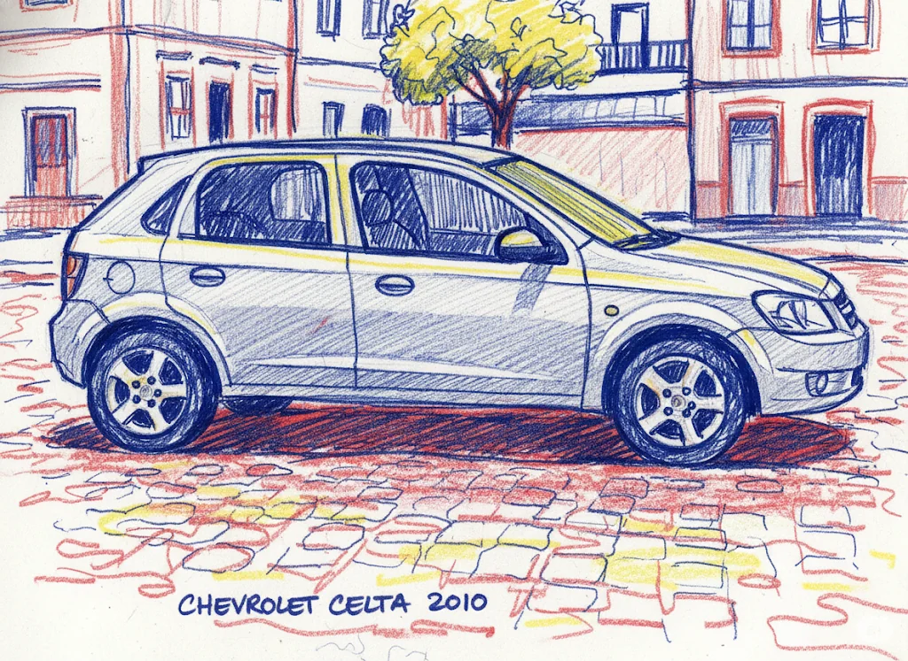
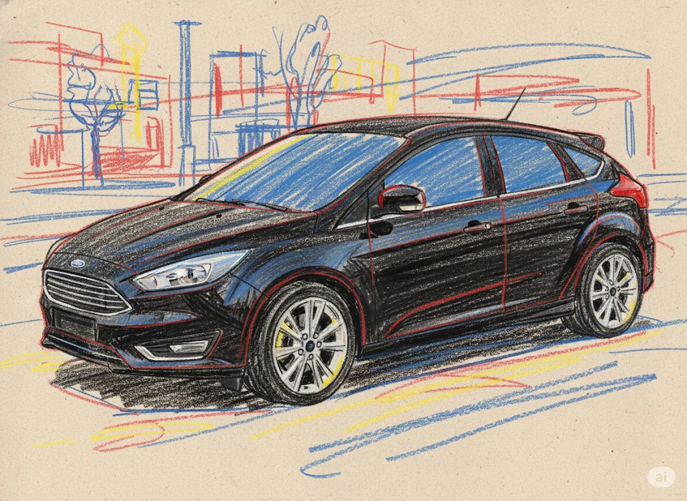

Camada terrena
A matéria
Boletos, deslocamentos, estudo, trabalho e decisões práticas. A sobrevivência estratégica não é oposta ao pensamento cósmico; é a base que sustenta o observatório.
- Modo
- Rotina · corpo · constância
- Meta preservada
- FUVEST / USP
- Objeto simbólico
- Transporte para o observatório

